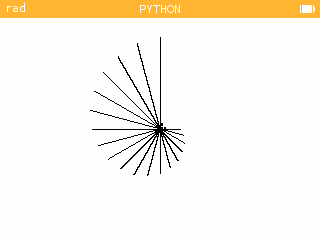

Le module turtle⚓︎
la commande color() bugue
Consignes
- Vous travaillerez et testerez vos scripts sur le site de la numworks dans l'onglet
Mon siteou directement sur votre Pythonette. - Créez vos scripts en prenant cochant [x] la case Permettre aux autres utilisateurs d'accéder à ce script.
- Sauvegarder les images obtenues à l'aide d'un click droit de souris.
- Se connecter à la page
Doctoolsl'aide des codes perso distribués. Utiliser le codeftK2pour accéder au document à compléter en ligne. Déposer les liens vers les scripts ansi que les images dans le document. - Le nom du fichier indiquera la date et noms des élèves de votre groupe.
Le module turtle
Le module !python turtle permet de tracer facilement des dessins en Python. Il s'agit de commander une tortue à l'aide d'instructions simples comme avancer, tourner...
C'est le même principe qu'avec Scratch, avec toutefois des différences : les instructions en anglais remplacent les blocs.
Les points de l'écran sont détérminés par leurs coordonnées :
- l'abscisse \(x\) va de \(-160\) à \(+160\)
- l'ordonnée \(y\) va de \(-110\) à \(+110\)
- \((0,0)\) est au centre de l'écran.

Instructions de base du module
Nous nous contenterons d'utiliser les commandes disponibles dans le module turtle de la Numworks.
Pour les déplacements on utilise :
forward(longueur)avance d'un certain nombre de pasbackward(longueur)reculegoto(x,y)se déplace jusqu'au point \((x,y)\)position()renvoie la position \((x,y)\) de la tortuesetposition(x,y)change la valeurs des coordonnéesright(angle)tourne vers la droite (sans avancer) selon un angle donné en degrésleft(angle)tourne vers la gaucheheading()renvoie la directionanglevers laquelle pointe la tortuesetheading(direction)s'oriente dans une direction (\(0\) = droite, \(90\) = haut, \(-90\) = bas, \(180\) = gauche)circle(rayon)pour dessiner un cercle
Pour régler les propriétés du stylo :
down()/up()abaisse/relève le stylowidth(epaisseur)change l'épaisseur du traitcolor(rouge,vert, bleu)change la couleur du trait par synthès additive à partir de trois couleurs primaire. L'intensité de chaque couleur primaire est donnée par un entier entre0et255.showturtle()ethideturtle()speed()vitesse de la tortue
Exemple 1
Analyse ce script qui dessine la lettre J.
Exercice 1
Écrire un script qui trace vos initiales (2 lettres).
# Tests (insensible à la casse)(Ctrl+I)
(Alt+: ; Ctrl pour inverser les colonnes)
(Esc)
Exemple 2
Tester le script ci-dessous.
# Tests (insensible à la casse)(Ctrl+I)
(Alt+: ; Ctrl pour inverser les colonnes)
(Esc)
Exercice 2 Polygones réguliers
Ecrire un script d'une fonction d'appel octogone() qui prend pour paramètre l et dessine un octogone régulier de longueur de côté l.
# Tests (insensible à la casse)(Ctrl+I)
(Alt+: ; Ctrl pour inverser les colonnes)
(Esc)
Exemple 3
Tester le script ci-dessous.
# Tests (insensible à la casse)(Ctrl+I)
(Alt+: ; Ctrl pour inverser les colonnes)
(Esc)
Exercice 3 Une Spirale
Complèter le script ci-dessous afin de tracer la figure ci-dessous :
.
# Tests (insensible à la casse)(Ctrl+I)
(Alt+: ; Ctrl pour inverser les colonnes)
(Esc)
Exemple 4 Un peu de hasard
Tester le script ci-dessous.
# Tests (insensible à la casse)(Ctrl+I)
(Alt+: ; Ctrl pour inverser les colonnes)
(Esc)
Exercice 4
- Tester dans votre espace Numworks le script suivant. Enregistrer l'image dans le document.
🐍 Script Python 1 2 3 4 5 6 7 8 9 10 11 12 13 14 15
from random import * from turtle import * width(3) speed(0) def square(size): for i in range(4): forward(size) left(90) for i in range(20): x = randrange(-150,150) y = randrange(-50,50) up() goto(x,y) down() square(randrange(5,50)) - Modifier le script pour générer des carrés de traits de lignes variables, et de couleurs aléatoires.
# Tests(insensible à la casse)(Ctrl+I)
(Alt+: ; Ctrl pour inverser les colonnes)
(Esc)